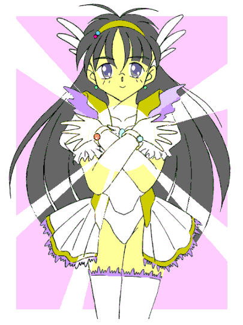
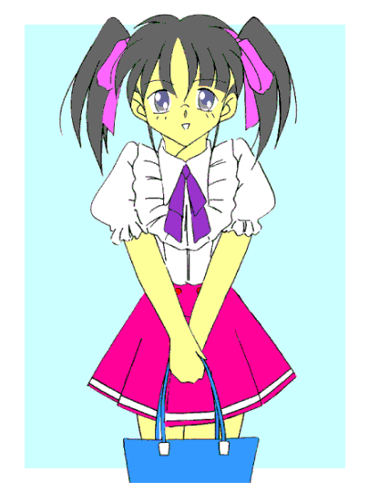

春の朝日の中――
｢いってきまーすっ！！｣
転校初日の俺は、元気よく家をとび出そうとした……が、そんな俺を母さんが呼び止めた。
｢待ちなさい武士！！ これを持っていかなきゃダメじゃない！！｣
そう言って渡してきたのは、青い、少し小さ目のバッグだった。
｢それ……やっぱり持っていかなきゃダメかな？｣
｢何言ってるの？ なかったら困るのはあなたなのよっ｣
母さんにそう言われて、俺はため息をつきながらバッグをカバンの中に入れ込んだ。
変身美少女戦士ミラージュガール
第一話：俺は転校生で美少女戦士！？
作：ライターマン
父親の仕事の都合で、春休みにここ新間（しんま）市に引っ越してきた俺は、中学２年の始業式を転校先の私立津留木（つるぎ）学園で迎えることになった。
新しい制服を着て先生と一緒に２年Ｃ組の教室に入った俺は、始業式前のホームルームで紹介された後、
｢三代武士（みしろ･たけし）です。よろしくお願いします｣
と言って頭をぺこりと下げた。
公立ならともかく、私立の……しかも中高一貫教育の学校にとって転校生というのは珍しいらしく、始業式あとの休み時間になると、まわりを囲まれていろいろと質問された。
転校生は時々いじめの対象になる――なんて噂を聞いたことのある俺は、当り障りのないように質問に答えた。
だけどここの雰囲気を見る限り、そんなことはなさそうなので俺はホッとした。
もっとも、前にいたところでは空手だか古武術だかを近所のじいさんに習っていたから、４、５人くらいなら襲い掛かってこられても返り討ちにする自信はある。だが、無用な揉めごとなどない方がいいに決まってるし、俺はもともと争いごとは好きじゃないのだ。
｢よう、三代｣
昼休み、食事が終わって屋上に出た俺に、クラスメイトの沢田が人なつっこそうな声をかけてきた。
｢……そういえばお前知ってるか？ あの噂｣
｢噂？｣
｢先々週ごろから、このあたりで出てるらしいぜ……正義の味方｣
ギクッ！！
俺は高鳴る心臓を抑え、気付かれないように平静を装いながら沢田に答えた。
｢正義の味方？ 何だよそれ？ 何かの番組の撮影か？｣
｢いや、そんなんじゃなくて現実の正義の味方らしいぜ。なんでも悪魔とか化け物とかがいるところに現れては、退治して回っているそうだ｣
｢まさか？｣
｢本当らしいぜ。警察とかは全然本気にしてないみたいだけど、あちこちで噂になってるんだ。しかもさ、その正義の味方ってすっごい美少女らしいぜ｣
美少女――の部分に力を込めて語る沢田。
どうやら沢田にとっては、｢美少女｣が現れたことがビッグニュースで、その美少女が｢正義の味方｣なのはおまけみたいなものらしい。
｢本当に美少女なのか？ 根も葉もない噂に尾ひれが付いてるんじゃないのか？｣
あくまでも否定的な意見を述べる俺。その正義の味方が美少女かどうかはともかく、注目を集めるのは俺にとって好ましいものじゃなかった。
だが、沢田はとんでもないことを言い出した。
｢……だからさ、探してみようかと思ってるんだ。正義の味方とか化け物が出そうな場所なんかを回ってさ｣
（げっ！！ ……勘弁してくれよ。そういうのが一番困るんだよ）
｢今日の放課後に、クラスのみんなと北の森の方を探してみようと思うんだ。古木は参加できないって言っていたけど、飯山と風見と峰松も一緒に行くから、三代もどうだい？｣
沢田は目を輝かせて俺を誘っている。
俺は溜息をつくと、首を横に振って沢田に言った。
｢ごめん、悪いけど放課後は用事があるんだ。……あのさ、もしその正義の味方が本当にいて、それで化け物と戦っているとしたら、とても危険だから近くに行かない方がいいと思うよ｣
何とか思いとどまってもらおうと忠告したけど、沢田は考えを変えなかった。
それでも俺は何とか説得しようとしたが、沢田たちは授業が終わると早々に学校を出ていってしまった。
｢武士さん……武士さん｣
自宅へ向かう俺に、どこからともなく声がかかった。やがて一羽の小鳥が俺の肩に留まると、
｢武士さん。魔獣が現れました。すぐに現場に向かってください｣
｢本当か？ チコ｣
｢誰がチコですか！？ 私の名前はペルティノです！！｣
実は俺の肩に乗っている小鳥は仮の姿、その正体は精霊界から来た妖精ペルティノことペルである。
彼女は小動物であれば何にでも変身でき、今回は小鳥の姿になっていたので｢チコ｣と呼んでみたのだが、彼女は意味が分からず怒ってしまった。
……ネタが古かったかな？ ｢はいはい。……で、どこなんだそこは？｣
｢ここから北の方にある森の中です｣
彼女が言った場所――それは沢田たちが向かった場所だった。
｢うわぁぁぁぁぁっ！！｣
森に入ってしばらくした頃、奥の方から人の叫び声が聞こえてきた。
｢武士さん！ 急いで変身を！！｣
ペルに急かされて、俺はカバンの中から綺麗な飾りのついたブローチを取り出した。
そして目を閉じて大きく息を吸い込み、精神を集中し……
｢ミラージュマジック ･ ミラクルチャージ！！｣
するとブローチが光り出し、続いて俺の衣服が光の粒子に変わっていく。
光の粒子は俺の周りを回り出し、裸の状態の俺は光に包まれた。
光に包まれた俺の身体が徐々に変化していく。
髪がサラサラになって長くなり、腰のあたりまで伸びていく。
肌が白くなり、指や腕、それに足がスラリと細くなっていく。
腰の部分が大きくなり、逆にウエストの部分が細く括れていく。
そして胸の部分が少しずつ膨らみ、やがて二つの丸い塊になる。
身体の変化が終わると、俺を囲んでいた光の粒子が集まり始める。やがてそれらは光沢のある白い生地で出来た服とミニスカート、手袋、ブーツ、ヘアバンドになって俺の身体を包み、そしてブローチが胸の中心に固定された。
｢……ふうっ、変身完了っと｣
声変わり前の……いやそれ以上に澄んだ綺麗な声が俺の口からとび出す。
母さんの話によると、今の俺の姿こそ、邪霊界からの邪悪な存在と戦うための正義の戦士の姿……らしい。
俺はアニメや特撮が好きだから、そういう話は嫌いじゃない。しかも俺自身が｢正義のヒーロー(？)｣に変身するんだから……普通なら喜んだかもしれない。
けど、俺はこの変身があまり好きじゃなかった。
好きになれない理由はいくつかあるけど、そのうちの一つは、｢変身すると俺の身体が女の子、それもかなりの美少女になってしまう｣ことだった。
俺は可愛い女の子は好きだが、それは見て楽しむものだ。……自分がなって楽しむものではない！！
それなのになんで俺が女の子になって、キラキラした衣装とミニスカートをひらめかせながら戦わないといけないのだ！？
｢はあ……｣
思わずため息をついた俺を、ペルが急かせた。
｢さあ行きますよ……それにしても武士さん｣
｢何だ？｣
｢どうして精神を集中したりするんです？ キーワードを唱えるだけで変身できるのに｣
｢自分の身体が女になったり女物の衣装が俺の身体を包むのなんて、恥ずかしくていちいち感じていられるか！！ ……それより行くぞっ！！｣
そう言って勢いよく駆け出そうとしたのだが、
プルンッ！！ ｢……うわわわっ！！！！｣
油断した俺は胸の揺れをモロに感じてしまい、思わずその場にうずくまってしまった。
森の中では沢田たちが山道を走っていた。
あいつらは面白半分に森の中へ入っていったけど、魔獣に出合った途端に悲鳴を上げながら逃げ出したらしい。
もしかしたら、本当に化け物に出会うなどとは思わなかったのかもしれない。
一目散に逃げていた彼らだったが、木の根に足を引っ掛けてしまい、沢田が転んでしまった。
グルルルル……ッ
唸り声を上げながら沢田に近づく魔獣。沢田は恐怖で体が動かず震えている。
｢待ちなさい！！｣
脅威のジャンプ力を駆使して木の枝づたいを飛んできた俺は、魔獣の近くに降り立つと、仁王立ちになってビシッとそいつを指差した。
｢邪霊界より出でて闇に潜み、人を襲う悪しき者よ。世界に災いをなすお前たちの行為はこの俺……あたしが許しません。正義の美少女戦士ミラージュホワイトが白き光でお前を消滅させるから、覚悟なさい！！｣
沢田の目の前で、女言葉で見得を切るのは恥ずかしかったけど、この行為にはちゃんと理由がある……らしい。
一つは、自分が「正義」で、戦う相手が「悪」だということを宣言すること。
見知らぬ者が突然現れて戦い始めるのを見たとき、人はどちらが正しいと思うだろうか？ 状況にもよるけど、場合によってはこちらを悪者と思って攻撃してくる場合もあるかもしれない。
だから最初に相手の正体と罪状を明らかにして自分が｢正義の戦士｣を名乗ることにより、「自分＝正義」と「敵＝悪」の構図を人々に確立させる必要がある……と母さんが言っていた。
……なんかどっかの国が戦争を仕掛けるときのやり方に似ているような気がするのは、俺の気のせいだろうか？
俺が沢田と魔獣に向かって走り出すと、魔獣はジャンプして俺との距離をとった。
｢早く逃げて！！｣
沢田の手を引いて立たせながらそう言うと、沢田は慌てて走り出し、しばらくすると見えなくなった。
｢……さあて、これで心置きなく戦えるぜ｣
俺は魔獣を睨みつけ、捕まえようとした。……その時！
｢危ない！！ 右！！｣
ペルの叫びに慌てて身をひるがえすと、右側からもう一匹の魔獣が俺の身体をかすめていった。
｢しまった、二匹いたのか……っ｣
つぶやきながら俺は舌打ちをした。
とにかく一匹ずつ片付けて、と思った俺は、二匹のうちの一匹に向かって走り出す。だが、その魔獣は結構素早く、俺の手をするりとかわして逃げてしまう。
その間に、もう一匹が背後から襲ってくる。
「くそっ！！｣
と叫び、俺は魔獣の攻撃をよけて体勢を立て直す。だが魔獣たちは俺を挟み込み、周囲をグルグルと回り始めた。
｢ホワイトっ、左腕を！！｣
ペルに言われて俺は左腕を見た。
俺に両腕の手首にはブレスレットが装着されているのだが、左腕のブレスレットに付いている宝石の色が、それまでの青から赤に変化していた。
（まずい、時間がないっ！！）
俺はあせった。
ミラージュホワイトへの変身は、ブローチを介してパワーを自分の身体に｢チャージ｣することにより行なわれる。だがその変身時間は約１０分で、一度変身すると、半日は再変身ができない。
そして、左腕の宝石の色が赤に変わったということは、タイムリミットが後２分を切った――という事なのだ。
ここで時間切れになって変身が解除されると、目の前の魔獣たちにやられてしまう。しかし、ここで逃げ出すわけにはいかない。
もし逃げ出してしまうとどうなるか？
ペルから母さんにそれが報告されると、現場放棄とみなされて晩飯抜き＆小遣い没収になってしまうのだっ！！
……いや、他にも逃がしてしまうと魔獣に襲われる犠牲者が増えてしまう――とかいろいろ理由はあるけど、これだって俺にとっては深刻な問題である。


（つづく）
おことわり
この物語はフィクションです。劇中に出てくる人物、団体は全て架空の物で実在の物とは何の関係もありません。
あとがき
どうも、ライターマンです。
ああ、とうとうやってしまった……という訳（？）で美少女戦士ものに手を出してしまいました。（笑）
いろいろ恥ずかしいことを強制されながらも悪と戦う正義の美少女（爆）の武士くん。
彼はどうして変身するようになったのか？
意味深なクラスメイトの古木との関係はどうなるのか？
などという点については次回以降に持ち越しということで今回はこれで失礼したいと思います。
それではまた。
□ 感想はこちらに □